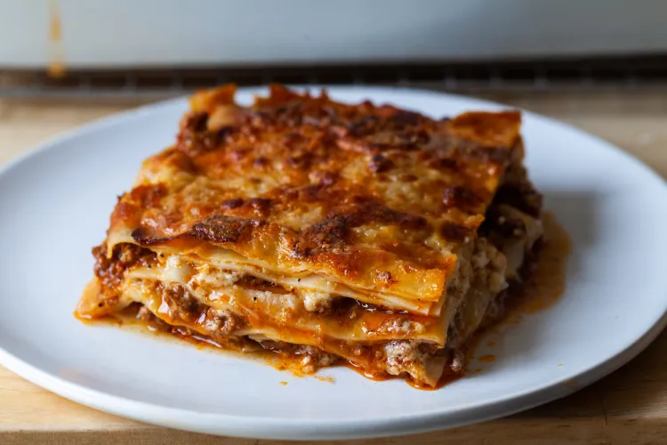

Lasagna recipe

Description
A recipe for lasagna, lifted from smittenkitchen.com.
Ingredients
Bolognese sauce
- 1 medium onion, coarsely chopped (1-inch pieces are fine)
- 1 large or 2 slim carrots, coarsely chopped
- 2 ribs celery, coarsely chopped
- 3 cloves garlic, coarsely chopped
- 2 to 3 tablespoons olive oil
- Kosher salt
- Freshly ground black pepper
- 2 pounds ground beef or, if you prefer, 1 pound each beef and pork
- 1 1/4 cups tomato paste (from 2 6-ounce cans)
- 2 cups red wine, preferably hearty but really, anything you like to drink
- Water as needed
- 2 bay leaves
- A few sprigs thyme, tied in a bundle
Pasta
- 1 1/2 cups all-purpose flour
- 2 large eggs
- 1/2 teaspoon fine sea or table salt
- 1 to 2 tablespoons water, if needed
Béchamel sauce
- 1/2 cup (8 tablespoons) unsalted butter
- 1/2 cup all-purpose flour
- 4 cups whole milk
- 1 teaspoon fine sea or table salt
- 1 clove minced garlic
- Freshly grated nutmeg, to taste
- Freshly ground black pepper
Assembly
- 1 2/3 cups grated Parmesan cheese
Steps
Day 1: Bolognese Sauce
- Chop vegetables: Pulse onion, carrots, celery, and garlic in a food processor.
- Cook veggies: Sauté in a Dutch oven with oil until browned, ~15 minutes. Season with salt and pepper.
- Brown beef: Add ground beef, season, and cook until browned, ~15 minutes.
- Add flavors: Mix in tomato paste, cook for 3-4 minutes. Add red wine and reduce, ~5 minutes.
- Simmer sauce: Add water (1 inch above meat), bay leaves, and thyme. Simmer for 3-4 hours, adding water as needed. Makes about 8 cups; refrigerate 4 cups for lasagna.
Day 2: Pasta and Béchamel
- Make pasta dough: Combine ingredients in a food processor, rest for 1 hour.
- Roll and cook pasta: Roll dough to thin sheets, boil cut pieces for 1-2 minutes, then cool in ice water.
- Make béchamel: Melt butter, add flour, cook 1 minute. Gradually whisk in milk until smooth, cook for 10 minutes. Season.
Assemble Lasagna
- Preheat oven: 400°F (200°C).
- Layer ingredients: In a 9*13-inch dish, layer pasta, bolognese, béchamel, and parmesan. Repeat 4 times.
- Top and bake: Finish with béchamel and parmesan, bake 30-45 minutes until bubbly and browned.
- Rest and serve: Let lasagna rest for 10-30 minutes before serving.
Do-ahead tips: Assemble lasagna a day in advance or freeze before baking. Reheats well for up to 3 days.